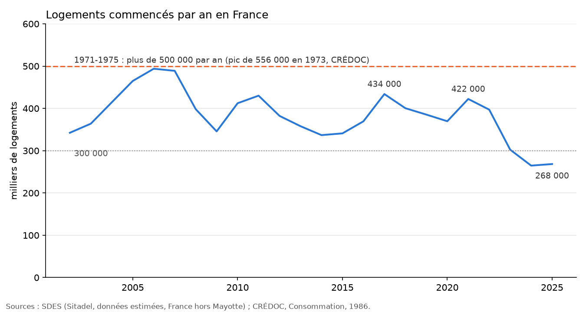

← Tous les thèmes · 10 sur 16
Logement et urbanisme
Globalement juste : la construction s'est effondrée et la France dépense plus que ses voisins, même s'il grossit un peu l'écart.
- ✓Exact 1
- ≈Proche 2
- ?Invérifiable 1
4 affirmations · 6 sources
1Ce qu'il dit
Ses mots, avant toute vérification. Les étiquettes numérotées renvoient à l'affirmation vérifiée plus bas, sous le même numéro.
Diagnostic
Une crise de la construction
- « Quand le président Pompidou meurt en 1974, il y a 10 millions d'habitants de moins en France. Et il y a quasiment 500 000 logements neufs par an… Aujourd'hui, on a 10 millions d'habitants de plus et on est en dessous de 300 000 logements par an » (audition à l'Assemblée, 22/10/2025) ;
- en 2022 : « déjà faible, à 437 000, en 2017, le nombre de logements mis en chantier […] n'a cessé de diminuer, jusqu'à 345 000 en 2021 » ;
- en 2025 : « seuls 258.500 logements ont été mis en chantier sur un an ».
Beaucoup d'argent public pour un mauvais résultat
« 40 milliards d'euros de dépenses publiques […] (soit 1,2 % du PIB contre 0,5 % en moyenne européenne selon les données Eurostat) », et une fiscalité qui « pèse en France 6 % des prélèvements obligatoires contre 3,3 % en moyenne dans l'OCDE ». Il parle de « l'échec du dirigisme » : la « doxa de bonne conscience collectiviste pénalise les investisseurs et les propriétaires, ce qui fait mécaniquement monter les prix du m² habitable » (chronique du 28/12/2022).
Un logement social mal ciblé
« plus des deux tiers des Français sont aujourd'hui en théorie éligibles au logement social, ce qui n'a évidemment aucun sens ». Selon lui, les bailleurs préfèrent alors « des locataires plus solvables » aux plus fragiles.
Des normes qui bloquent
Avec le zéro artificialisation nette (ZAN), « vous ne pouvez quasiment plus, en tant que maire, affecter de terrain » ; le diagnostic de performance énergétique (DPE) retire des logements de la location (2025).
Mesures proposées
| Mesure | Ce qu'il en dit | Vérifié plus bas |
|---|---|---|
| Supprimer l'article 55 de la loi SRU | « obligeant les communes à disposer de 20 % et bientôt 25 % de logements sociaux » ; « règle uniforme » qui « n'a pas fait progresser la mixité sociale » | — (opinion) |
| Remplacer, au moins un temps, l'objectif sur le stock par un objectif sur le flux | « défini par une concertation entre l'État et les collectivités concernées et qui serait plafonné » | — |
| « Libérer le marché du logement » | ne plus pénaliser les maires qui délivrent des permis au secteur marchand ; revoir le ZAN et le calendrier du DPE | — |
| Une politique du logement familial | dans le volet natalité | — |
2Ce que disent les chiffres
Une carte par affirmation : l'étiquette dit en quoi la phrase s'écarte des chiffres, la ligne en dessous dit pourquoi. Ouvrir une carte pour lire la citation exacte, l'explication, le calcul et les sources.
1✓Exact« Aujourd'hui, on a 10 millions d'habitants de plus et on est en dessous de 300 000 logements par an » (audition à l'Assemblée, 22/10/2025), après « quasiment 500 000 logements neufs par an » en 1974258 600 logements commencés sur les douze mois connus au moment où il parle, contre plus de 500 000 par an de 1971 à 1975. La population a même augmenté de plus de 10 millions.
« Aujourd'hui, on a 10 millions d'habitants de plus et on est en dessous de 300 000 logements par an. »
David Lisnard, entretien, Assemblée nationale, 22 octobre 2025 · voir la source
✓Exact
Confirmé par les données publiques.
Exact Confiance : forte
Pourquoi
- Au moment de l'audition, le SDES compte 258 600 logements commencés sur les 12 mois connus (octobre 2024 à septembre 2025). C'est aussi le chiffre qu'il citait en mai 2025 (« 258.500 sur un an »).
- Sur les années civiles : 264 700 en 2024, le plus bas depuis 2002, et 268 400 en 2025.
- Depuis, la construction remonte : 315 000 sur les 12 mois jusqu'à septembre 2026. Ces données sont encore estimées et seront révisées.
- En 1974 : d'après le CRÉDOC (1986), les mises en chantier ont dépassé 500 000 de 1971 à 1975, avec un pic de 556 000 en 1973, et ne sont repassées sous 500 000 qu'en 1976. « Quasiment 500 000 » est donc même un peu en dessous de la réalité. Une série officielle téléchargeable pour ces années n'a pas été trouvée.
- La population a augmenté davantage que « 10 millions » :
- +11,4 millions en métropole entre 1974 et 2013, date où s'arrête la série métropolitaine d'Eurostat ;
- +16,6 millions entre la métropole de 1974 et la France entière de 2025, DOM compris (1,9 million en 2013).
- Rapporté à la population, on construit 2,5 fois moins qu'en 1974 : 3,9 logements commencés pour 1 000 habitants en 2025, contre au moins 9,6 en 1974.
- Réserve sur sa version de 2022 (« 437 000 en 2017 […] jusqu'à 345 000 en 2021 ») :
- 2017 est juste : 433 900 dans la série actuelle ;
- 2021 ne l'est pas : 422 300, une année de rebond après 2020, et non le point bas d'une baisse continue. La série a pu être révisée depuis 2022, mais aucune version publiée à 345 000 n'a été retrouvée.

Ses autres formulations (3)
- « Quand le président Pompidou meurt en 1974, il y a 10 millions d'habitants de moins en France. Et il y a quasiment 500 000 logements neufs par an » (même audition)
- « déjà faible, à 437 000, en 2017, le nombre de logements mis en chantier en France n’a cessé de diminuer, jusqu’à 345 000 en 2021 » (22/12/2022)
- « seuls 258.500 logements ont été mis en chantier sur un an » (09/05/2025)
Le calcul
Logements commencés et population
- Entrées :
SDES-LOGEMENTS-MENSUEL: logements commencés par mois, série brute « Tous Logements », France hors Mayotte, données estimées (Sitadel), de janvier 2002 à septembre 2026 ;CREDOC-1986-CONSTRUCTION: CRÉDOC, *Consommation*, 1986, pour les années 1970 (« de 500 000 en 1971 », « 556 000 logements » en 1973, niveau repassé sous 500 000 « en 1976 ») ;EUROSTAT-POPULATION: population au 1er janvier, France métropolitaine (série FX, jusqu'en 2013) et France entière (FR, depuis 1982).
- Calculs :
- sommes annuelles des 12 mois (années complètes seulement) ;
- somme glissante des 12 mois connus avant l'audition du 22/10/2025 (octobre 2024 à septembre 2025) et des 12 derniers mois ;
- hausse de la population : FX 2013 − FX 1974, puis FR 2025 − FX 1974 (y compris les DOM, 1,9 million en 2013 d'après FR − FX) ;
- logements commencés pour 1 000 habitants = logements / population × 1 000. Pour 1974, 500 000 est une borne basse, car le nombre réel dépassait ce seuil.
- Limites :
- les données SDES « estimées » sont révisées, et un chiffre cité en 2022 peut différer de la série actuelle ;
- aucune série officielle téléchargeable avant 2000 n'a été trouvée, d'où le recours au CRÉDOC.
Résultats du calcul
Ce qu'il dit : 437 000 · 345 000 · « en dessous de 300 000 » · « quasiment 500 000 » en 1974 · 10 millions de plus
| Mesure | Cas | Valeur | Remarque |
|---|---|---|---|
| Logements commencés dans l'année (France hors Mayotte, données estimées) | 2017 | 433 911,0 logements | |
| Logements commencés dans l'année (France hors Mayotte, données estimées) | 2021 | 422 307,0 logements | |
| Logements commencés dans l'année (France hors Mayotte, données estimées) | 2024 | 264 705,0 logements | |
| Logements commencés dans l'année (France hors Mayotte, données estimées) | 2025 | 268 428,0 logements | |
| Logements commencés sur les 12 mois connus au moment de l'audition (22/10/2025) | 12 mois jusqu'à 09/2025 | 258 577,0 logements | données estimées, révisées depuis |
| Logements commencés sur les 12 derniers mois connus | 12 mois jusqu'à 09/2026 | 315 026,0 logements | |
| Année complète la plus basse de la série | plus bas depuis 2002 | 264 705,0 logements | la série estimée commence en 2002 |
| Logements mis en chantier par an, seuil franchi de 1971 à 1975 | 1971-1975 (CRÉDOC) | 500 000,0 logements | au-dessus de 500 000 de 1971 à 1975, pic de 556000 en 1973, repassé sous 500 000 en 1976 |
| Hausse de la population (France métropolitaine) | métropole 1974 → métropole 2013 | 11,38 millions | la série métropolitaine s'arrête en 2013 |
| Hausse de la population | métropole 1974 → France entière 2025 | 16,56 millions | inclut les DOM (1.9 million en 2013) |
| Logements commencés pour 1 000 habitants | 1974, au moins 500 000 | 9,56 ‰ | borne basse : le nombre réel dépasse 500 000 |
| Logements commencés pour 1 000 habitants | 2025 | 3,9 ‰ |
Les sources (3)
- AEurostat (données Insee) · Population au 1er janvier, France entière et France métropolitaine (demo_gind) · relevé le 14/11/2026 ·
EUROSTAT-POPULATION - AMinistère de la Transition écologique (SDES, base Sitadel) · Logements autorisés et commencés, séries mensuelles nationales (données estimées) · relevé le 14/11/2026 ·
SDES-LOGEMENTS-MENSUEL - BCRÉDOC (revue Consommation) · Article de 1986 sur l'investissement en logement : séries de mises en chantier 1950-1985 · relevé le 14/11/2026 ·
CREDOC-1986-CONSTRUCTION
2≈Périmètres mélangés« 40 milliards d'euros de dépenses publiques […] consacrés en France à la politique du logement (soit 1,2 % du PIB contre 0,5 % en moyenne européenne selon les données Eurostat) » (22/12/2022)Le rapport de 2 à 1 avec l'Europe est juste en temps normal. Mais ses deux chiffres viennent d'années différentes, et les 40 Md€ d'une autre source.
« 40 milliards d’euros de dépenses publiques, toutes administrations confondues, qui sont consacrés en France à la politique du logement (soit 1,2 % du PIB contre 0,5 % en moyenne européenne selon les données Eurostat) »
David Lisnard, tribune, Logement, sortir de l’échec du dirigisme, 22 décembre 2022
≈Périmètres mélangés
Le chiffre existe, mais il ne mesure pas ce que dit la phrase, ou il est comparé à un chiffre qui ne couvre pas la même chose.
Proche Confiance : moyenne
- Ce qu'il annonce
- Données publiques
Pourquoi
- On retient les dépenses publiques consacrées au logement au sens d'Eurostat : développement du logement (GF0601) plus allocations logement (GF1006).
- 2019 : France 1,1 % du PIB, UE 0,5 %.
- 2021 : France 1,2 %, UE 0,8 %.
- 2024 : France 1,0 %, UE 0,5 %.
- Le rapport d'environ 2 pour 1 est donc juste en temps normal. Mais le couple « 1,2 contre 0,5 » prend le chiffre français de 2021 et le chiffre européen d'une autre année. En 2021-2023, la moyenne européenne était temporairement plus haute (0,8 à 0,9 %).
- Pour les seules allocations logement : 0,63 % du PIB en France contre 0,36 % dans l'UE en 2021, soit 1,8 fois plus.
- Les 40 Md€ ne correspondent pas aux dépenses d'Eurostat, qui donnent 30,5 Md€ en 2021. Ils correspondent plutôt au « compte du logement » du ministère, qui ajoute les avantages fiscaux. Ce compte n'a pas été téléchargé ici. Les deux chiffres de sa phrase viennent donc de sources différentes.
Le calcul
Dépenses publiques de logement
- Entrées :
EUROSTAT-COFOG-LOGEMENT: dépenses des administrations publiques (S13) par fonction. On retient GF0601 (développement du logement) et GF1006 (logement, au titre de la protection sociale : allocations), ainsi que GF06 (logement et équipements collectifs au sens large) ;EUROSTAT-PROTSOC-LOGEMENT: prestations sociales de logement (SESPROS, fonction HOU).
- Calculs :
- « dépenses publiques de logement » = GF0601 + GF1006, en % du PIB (deux valeurs arrondies à 0,1 point par Eurostat, d'où une incertitude de ± 0,1 point), pour la France et l'UE à 27, en 2019, 2021 et 2024 ;
- montant 2021 en Md€ (MIO_EUR / 1 000) ;
- rapport France / UE des prestations de logement.
- Les 40 Md€ de Lisnard correspondent plutôt au « compte du logement » (aides publiques, y compris les dépenses fiscales), qui n'a pas été téléchargé.
Résultats du calcul
Ce qu'il dit : 1,2 % (France) contre 0,5 % (UE) · 40 milliards d'euros
| Mesure | Cas | Valeur | Remarque |
|---|---|---|---|
| Dépenses publiques de logement (aménagement GF0601 + allocations GF1006) | France 2019 | 1,1 % du PIB | somme de deux valeurs arrondies à 0,1 point par Eurostat |
| Logement et équipements collectifs, au sens large (GF06) | France 2019 | 1,1 % du PIB | inclut eau, éclairage public, développement local |
| Dépenses publiques de logement (aménagement GF0601 + allocations GF1006) | UE à 27 2019 | 0,5 % du PIB | somme de deux valeurs arrondies à 0,1 point par Eurostat |
| Logement et équipements collectifs, au sens large (GF06) | UE à 27 2019 | 0,6 % du PIB | inclut eau, éclairage public, développement local |
| Dépenses publiques de logement (aménagement GF0601 + allocations GF1006) | France 2021 | 1,2 % du PIB | somme de deux valeurs arrondies à 0,1 point par Eurostat |
| Logement et équipements collectifs, au sens large (GF06) | France 2021 | 1,2 % du PIB | inclut eau, éclairage public, développement local |
| Dépenses publiques de logement (aménagement GF0601 + allocations GF1006) | UE à 27 2021 | 0,8 % du PIB | somme de deux valeurs arrondies à 0,1 point par Eurostat |
| Logement et équipements collectifs, au sens large (GF06) | UE à 27 2021 | 0,8 % du PIB | inclut eau, éclairage public, développement local |
| Dépenses publiques de logement (aménagement GF0601 + allocations GF1006) | France 2024 | 1,0 % du PIB | somme de deux valeurs arrondies à 0,1 point par Eurostat |
| Logement et équipements collectifs, au sens large (GF06) | France 2024 | 1,4 % du PIB | inclut eau, éclairage public, développement local |
| Dépenses publiques de logement (aménagement GF0601 + allocations GF1006) | UE à 27 2024 | 0,5 % du PIB | somme de deux valeurs arrondies à 0,1 point par Eurostat |
| Logement et équipements collectifs, au sens large (GF06) | UE à 27 2024 | 0,7 % du PIB | inclut eau, éclairage public, développement local |
| Dépenses publiques de logement (GF0601 + GF1006) | France 2021 | 30,51 Md€ | hors dépenses fiscales (TVA réduite, dispositifs d'investissement locatif), comptées dans les 40 Md€ |
| Prestations sociales de logement, France / UE | 2021, prestations seules | 0,63 % du PIB | UE à 27 : 0.36 % ; rapport 1.8 |
| Prestations sociales de logement, France / UE | 2024, prestations seules | 0,55 % du PIB | UE à 27 : 0.37 % ; rapport 1.5 |
Les sources (2)
- AEurostat · Dépenses publiques par fonction : logement et équipements collectifs (gov_10a_exp, GF06, GF0601 et GF1006) · relevé le 14/11/2026 ·
EUROSTAT-COFOG-LOGEMENT - AEurostat · Prestations sociales de logement (spr_exp_func, fonction HOU) · relevé le 14/11/2026 ·
EUROSTAT-PROTSOC-LOGEMENT
3≈Périmètres mélangés« La fiscalité liée au logement, qui pèse en France 6 % des prélèvements obligatoires contre 3,3 % en moyenne dans l'OCDE » (22/12/2022)La France est bien au-dessus de l'OCDE. Mais à périmètre égal, c'est 6,0 % contre 3,9 % : environ 1,5 fois plus, et non 1,8 fois.
« la fiscalité liée au logement, qui pèse en France 6 % des prélèvements obligatoires contre 3,3 % en moyenne dans l’OCDE »
David Lisnard, tribune, Logement, sortir de l’échec du dirigisme, 22 décembre 2022
≈Périmètres mélangés
Le chiffre existe, mais il ne mesure pas ce que dit la phrase, ou il est comparé à un chiffre qui ne couvre pas la même chose.
Proche Confiance : moyenne
- Ce qu'il annonce
- Données publiques
Pourquoi
- La France est bien nettement au-dessus de la moyenne de l'OCDE. L'écart dépend du périmètre retenu.
- Taxes foncières et d'habitation (impôts récurrents sur l'immobilier) : 4,6 % des recettes fiscales en 2021 contre 3,0 % dans l'OCDE ; 4,3 % contre 2,8 % en 2023.
- En ajoutant les droits de mutation (impôts sur les transactions) : 6,8 % contre 4,4 % en 2021 ; 6,0 % contre 3,9 % en 2023.
- Son « 6 % » correspond au périmètre large. Mais sur ce même périmètre, la moyenne de l'OCDE est d'environ 4 %, et non 3,3 %. Il compare un périmètre large pour la France à un périmètre plus étroit pour l'OCDE.
- L'écart réel est d'environ 1,5 fois, et non 1,8 fois.
Le calcul
Fiscalité immobilière
- Entrée :
OCDE-RECETTES-IMMOBILIER(statistiques des recettes publiques, ensemble des administrations) :- recettes fiscales totales (_T) ;
- impôts sur le patrimoine (4000) ;
- impôts récurrents sur la propriété immobilière (4100 : taxes foncière et d'habitation) ;
- impôts sur les transactions mobilières et immobilières (4400 : droits de mutation).
- Calculs : 4100 / total, puis (4100 + 4400) / total, en %, pour la France et la moyenne non pondérée de l'OCDE (OECD_REP), en 2021 et 2023.
- Limite : 4400 contient aussi des taxes sur les transactions financières. Le périmètre « fiscalité liée au logement » de Lisnard n'est pas défini.
Résultats du calcul
Ce qu'il dit : 6 % (France) contre 3,3 % (OCDE)
| Mesure | Cas | Valeur | Remarque |
|---|---|---|---|
| Impôts récurrents sur la propriété immobilière (4100) / recettes fiscales totales | France 2021 | 4,6 % | |
| Impôts 4100 + impôts sur les transactions (4400) / recettes fiscales totales | France 2021 | 6,76 % | 4400 inclut aussi les taxes sur les transactions financières |
| Impôts récurrents sur la propriété immobilière (4100) / recettes fiscales totales | moyenne OCDE 2021 | 2,96 % | |
| Impôts 4100 + impôts sur les transactions (4400) / recettes fiscales totales | moyenne OCDE 2021 | 4,44 % | 4400 inclut aussi les taxes sur les transactions financières |
| Impôts récurrents sur la propriété immobilière (4100) / recettes fiscales totales | France 2023 | 4,33 % | |
| Impôts 4100 + impôts sur les transactions (4400) / recettes fiscales totales | France 2023 | 5,97 % | 4400 inclut aussi les taxes sur les transactions financières |
| Impôts récurrents sur la propriété immobilière (4100) / recettes fiscales totales | moyenne OCDE 2023 | 2,81 % | |
| Impôts 4100 + impôts sur les transactions (4400) / recettes fiscales totales | moyenne OCDE 2023 | 3,92 % | 4400 inclut aussi les taxes sur les transactions financières |
Les sources (1)
- AOCDE (statistiques des recettes publiques) · Recettes fiscales totales et impôts sur le patrimoine (4000, 4100, 4400) · relevé le 14/11/2026 ·
OCDE-RECETTES-IMMOBILIER
4?Sans source« Plus des deux tiers des Français sont aujourd'hui en théorie éligibles au logement social » (programme)Le croisement entre les revenus des ménages et les plafonds du logement social n'a pas été fait. Un ordre de grandeur de 60 à 70 % circule dans le secteur, sans source statistique vérifiée.
« plus des deux tiers des Français sont aujourd’hui en théorie éligibles au logement social »
David Lisnard, programme : Programme Nouvelle Énergie — reussir-une-nouvelle-ambition-francaise, 1er septembre 2026 · voir la source
?Sans source
Pas de source, source mal attribuée, ou source proche de ses thèses.
Invérifiable
Pourquoi
- Pour le vérifier, il faut comparer la distribution des revenus fiscaux de référence des ménages, selon leur taille et leur zone, aux plafonds de ressources du logement social. Ce croisement n'a pas été fait.
- Un ordre de grandeur de ce type (60 à 70 % des ménages sous les plafonds du logement social standard) circule dans le secteur. Il n'a pas été vérifié ici auprès d'une source statistique publique.
- La phrase suivante du programme, « les bailleurs sociaux préfèrent des locataires plus solvables », relève de l'appréciation.
3Conclusion
Sur le logement, Lisnard est globalement juste.
- La construction s'est effondrée : 265 000 logements commencés en 2024, le plus bas depuis le début de la série (2002), contre plus de 500 000 par an de 1971 à 1975.
- La population a même augmenté davantage qu'il ne le dit.
- La France dépense environ deux fois plus que la moyenne européenne pour le logement, et sa fiscalité immobilière pèse plus lourd que la moyenne de l'OCDE.
- Il a tendance à grossir l'écart avec l'étranger. Une de ses versions de 2022 donnait un chiffre de 2021 que les données actuelles ne confirment pas.
Conventions de calcul
Résultats produits par calculer.py à partir de brut/ (catalogue sources.csv), dans resultats.csv. Les chiffres lus dans les PDF sont dans LUS_DANS_LES_PDF, avec la phrase exacte vérifiée. Données téléchargées le 14/11/2026. Graphique : graphiques/logements_commences.png.
Toutes les sources du thème (6)
A Statistique publique (Insee, Eurostat, OCDE, ministères…) · B Contrôle et évaluation (Cour des comptes, Sénat, Assemblée…)
- AEurostat · Dépenses publiques par fonction : logement et équipements collectifs (gov_10a_exp, GF06, GF0601 et GF1006) · relevé le 14/11/2026 ·
EUROSTAT-COFOG-LOGEMENT - AEurostat · Prestations sociales de logement (spr_exp_func, fonction HOU) · relevé le 14/11/2026 ·
EUROSTAT-PROTSOC-LOGEMENT - AEurostat (données Insee) · Population au 1er janvier, France entière et France métropolitaine (demo_gind) · relevé le 14/11/2026 ·
EUROSTAT-POPULATION - AMinistère de la Transition écologique (SDES, base Sitadel) · Logements autorisés et commencés, séries mensuelles nationales (données estimées) · relevé le 14/11/2026 ·
SDES-LOGEMENTS-MENSUEL - AOCDE (statistiques des recettes publiques) · Recettes fiscales totales et impôts sur le patrimoine (4000, 4100, 4400) · relevé le 14/11/2026 ·
OCDE-RECETTES-IMMOBILIER - BCRÉDOC (revue Consommation) · Article de 1986 sur l'investissement en logement : séries de mises en chantier 1950-1985 · relevé le 14/11/2026 ·
CREDOC-1986-CONSTRUCTION